This codelab will help you get started with Spring Cloud Stream. We'll quickly cover some basic fundamentals before jumping in to actually creating some Spring Cloud Stream microservices to see the framework in action.
You'll learn:
- Spring Cloud Stream Basics
- How to create a Cloud Stream Processor
- How to use Function Composition to create a processing pipeline
- Tips, Tricks & Insights along the way
Valuable Resources:
- The Spring Cloud Stream Reference Guide
- Spring Sample Github Repository
- Solace Sample Github Repository
🛠 This page covers the setup needed to perform this codelab. 🛠
Spring Cloud Stream Requirements
✅ Spring Cloud Stream just requires Java and Maven to use 🚀
- Java 1.8+ (Check version using
java -version) - Maven 3.3+ (Check version using
mvn -version)- On mac you can
brew install maven - Other install instructions here
- On mac you can
- Your favorite Java IDE 💥
Create your Messaging Service
✅ (1) Sign up for a free Solace Cloud account
Navigate to this link and fill out the required information. No credit card required! If you already have an account, skip right to #2.
✅ (2) Create a messaging service
After you create your Solace Cloud account and sign in to the Solace Cloud Console, you'll be routed to the Solace Cloud Landing page.
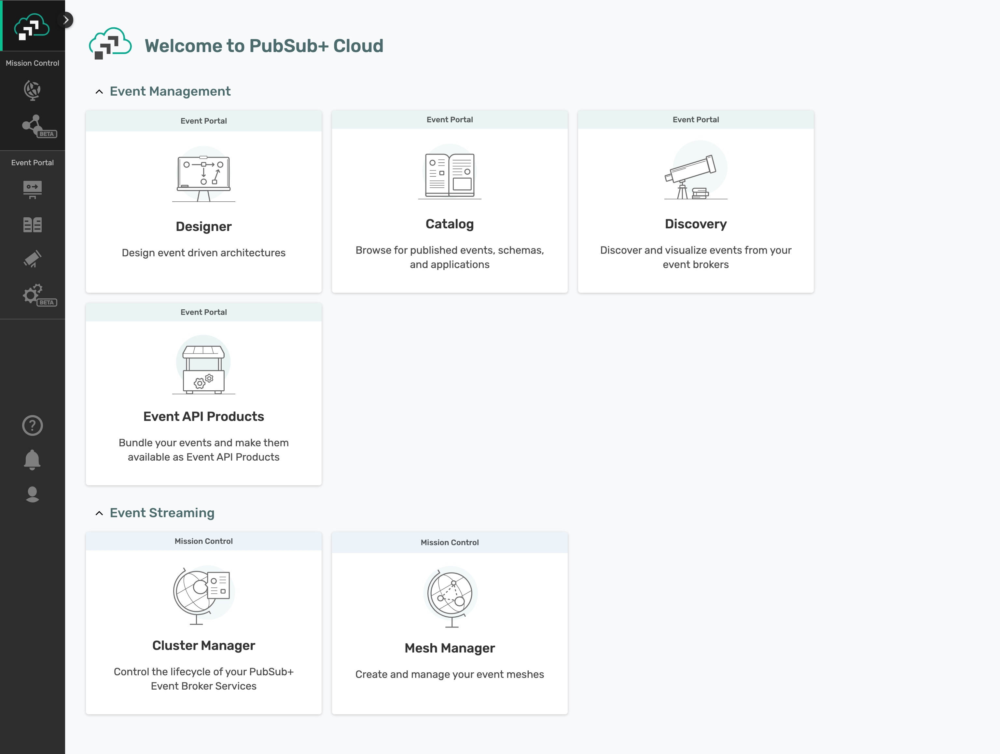
Click on ‘Cluster Manager' and all the messaging services associated with your account will show up if you have any already created. To create a new service, click either button as depicted in the image below:
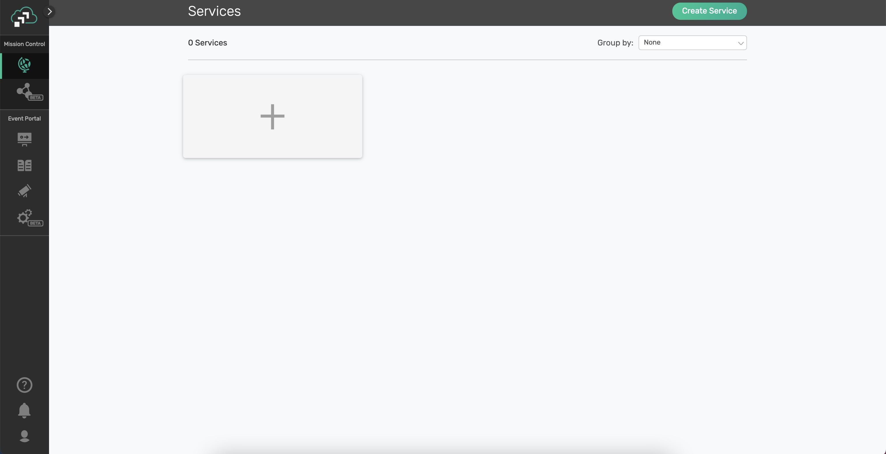
Fill out all the details for your messaging service, and then click "Create" at the bottom of the page. Note: make sure you choose the "Developer" option for the Service Type
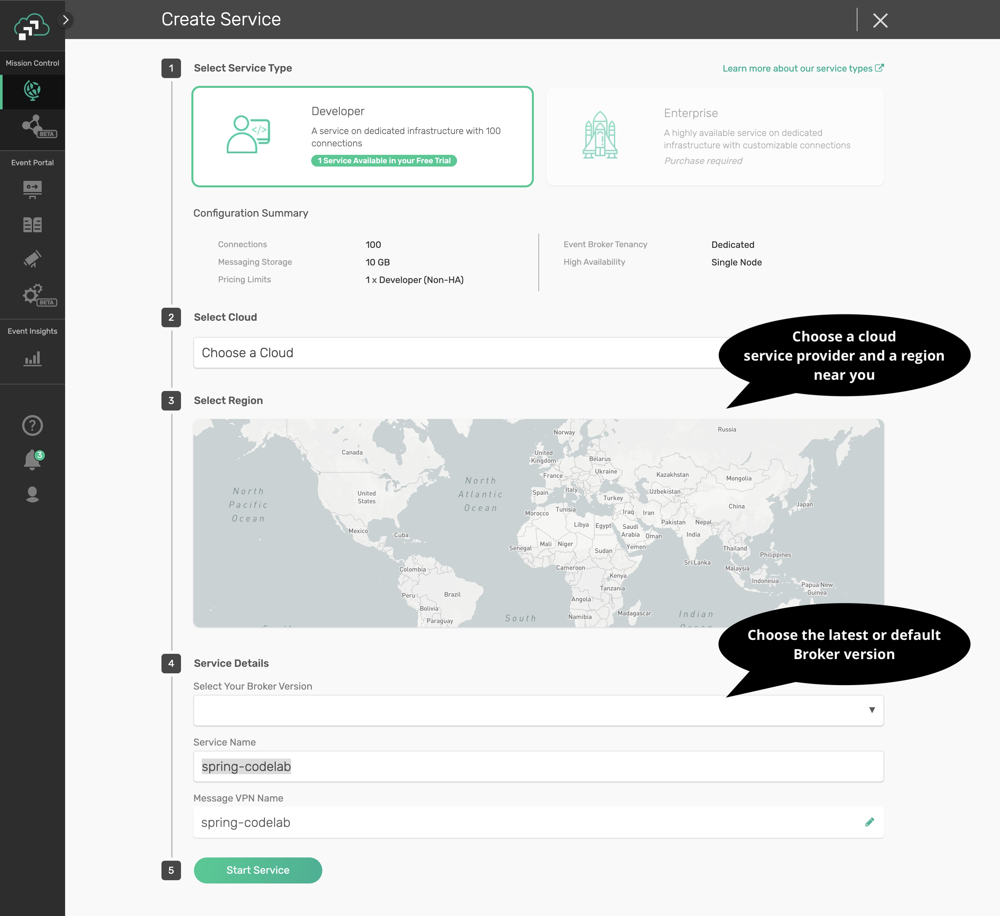
Your service should be ready to use in a few minutes
✅ (3) Take note of the connection details
If your messaging service was created successfully, you'll be routed to the summary page of your new messaging service. From the service summary page, click on the "Connect" tab so we can take note of the connection details we'll need later.
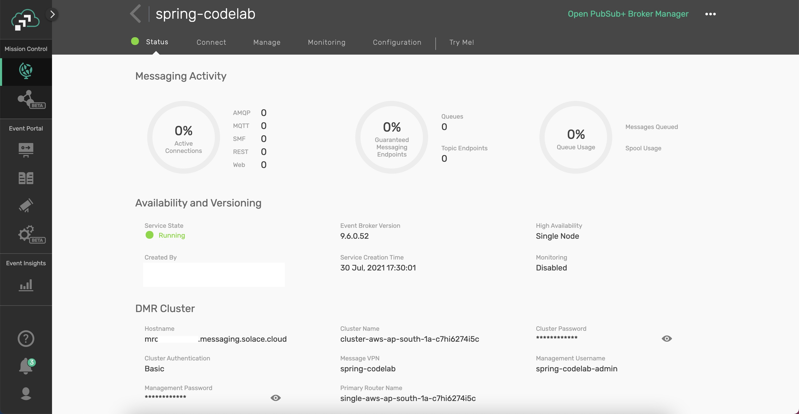
After you click the "Connect" tab, sort the supported client library menu by Language and click on the "Connect with Spring" box to expand it.
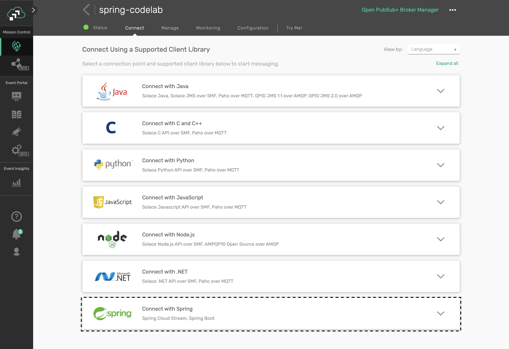
Click on the Get Started button next to the Spring Cloud Stream option.

Take note of the "Connect to Service" section and you'll see that the connection details are already configured in the spring.cloud.stream.binders part of the config to connect a Spring Cloud Stream microservice to your PubSub+ Messaging Service. We'll be using this soon 😄
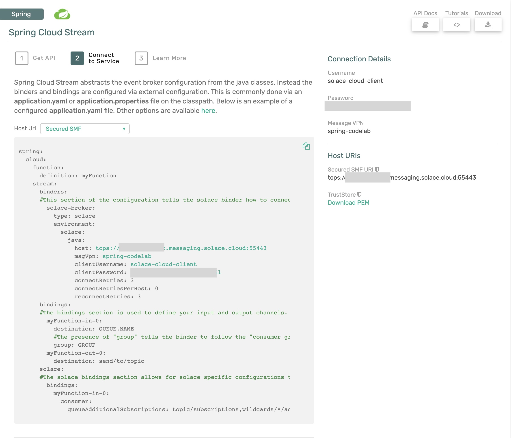
🚀 Setup complete! Let's get going! 🚀
Cloud Stream Basics
Spring Cloud Stream is a framework for creating highly scalable, event-driven microservices connected by pluggable messaging services. Messaging services are pluggable via Binders that we'll cover in a bit. The framework is based on Spring Boot and Spring Integration.
Spring Cloud Stream has three different types of message exchange contracts as pictures below.
- Suppliers are sources of events
- Sinks are consumers of events
- Processors are both consumers and subscribers of events
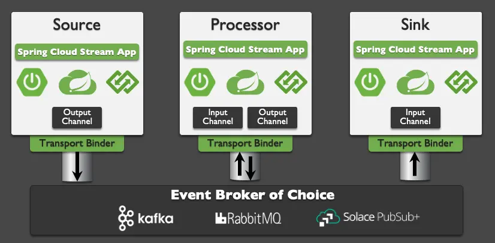
Message Exchange Contracts Map to Java Functions
As of Spring Cloud Stream v3 the preferred programming model is to use Java Functions to implement your cloud stream apps.
We just mentioned the 3 types of Cloud Stream message exchange contract are "Sources", "Sinks" and "Processors". Those map to functions as follows:
java.util.function.Supplier-> Source [Producer/Publisher of Events]java.util.function.Consumer-> Sink [Subscriber/Consumer of Events]java.util.function.Function-> Processor [ Consumes, Processes, and Produces Events ]
Binders
Spring Cloud Stream Binders are really what make the framework useful. Binders provide an abstraction layer between your code and the messaging systems over which events are flowing. This allows you to write your code without having to worry about learning messaging APIs! When messages are sent or received from the messaging system they pass through the messaging system specific binder which knows how to communicate with that specific message broker.
As of the creation of this codelab the available Cloud Stream Binders are:
- RabbitMQ
- Apache Kafka
- Amazon Kinesis
- Google PubSub
- Solace PubSub+
- Azure Event Hubs
- Apache RocketMQ
Today we're going to use the Solace PubSub+ Binder which supports publish subscribe and consumer groups.
Communication Models
Instead of having to learn Messaging APIs, developers just have to understand the communication models that Spring Cloud Stream supports. There are 3 supported models, but support varies per binder.
- Publish-subscribe: subscribers are independent from each other & receive events in order
- Consumer groups: fan-out and load-balancing across multiple consumers
- Stateful partitioning support: in-order processing for consistency and performance
🚀 So what are we waiting for!? Let's get started 🚀
In this section we are going to apply what we learned in the last few sections and create our first "processor" microservice. We'll create the Spring microservice in the diagram below and use the Solace "Try-Me" tab as the producer and consumer.

We will be using Spring Tool Suite as IDE for the codelab exercise. You can download Spring Tool Suite here
Use Spring Initializr to Generate your Project
🚀 First we're going to use Spring Initializr to generate our Spring Boot project for us.
- Open the Spring Tool Suite IDE.
- Choose
File -> New -> Spring Starter Project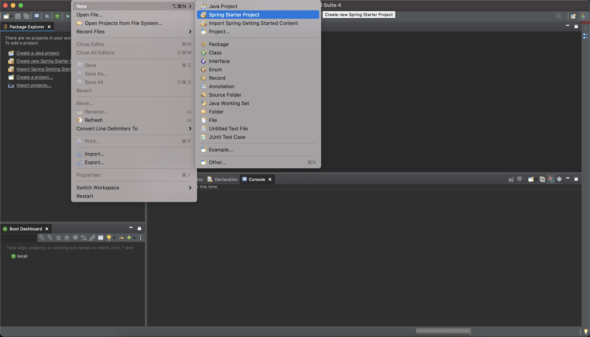 - On the first screen give your project a name of "springone" and click
Next - On the second screen search for "solace" under Available and choose both "Solace PubSub+" and "Cloud Stream" 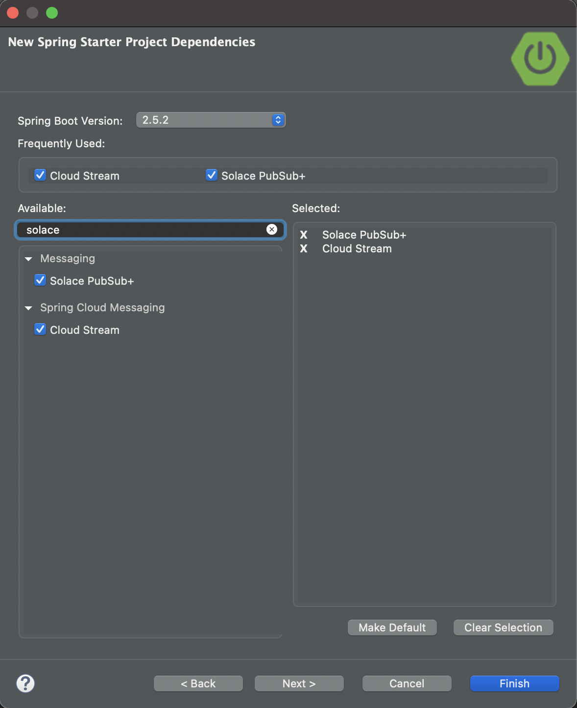
- Click
Finish
✅ You should see a new project named "springone" in your IDE!
If you look at the pom.xml file you'll see a few important things:
- This is a Spring Boot project which has a parent of
spring-boot-starter-parent - The java version you chose is included
- The "Spring Cloud Stream" and "Spring Cloud Starter Stream Solace" dependencies are included
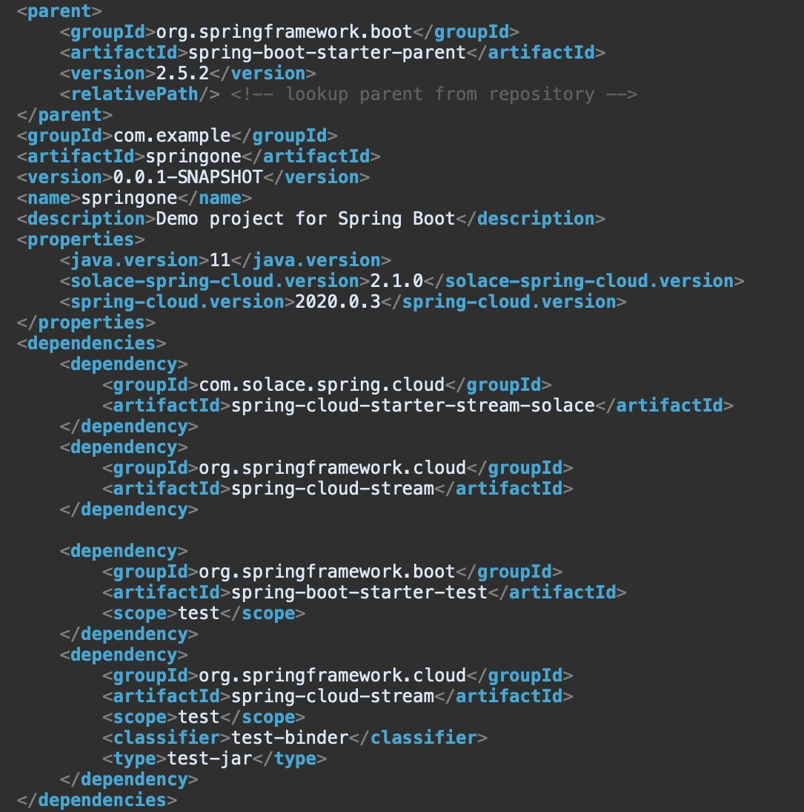
Add Messaging Service Connection Info
Open the application config file under src/main/resources and enter the properties below substituting the connection information with your messaging services' connect info we got from the Solace Cloud Connect tab in the previous section.
A. PubSub+ Broker running locally in Docker
Review your Broker setup running on Docker container and make note of host, port, message VPN, client username and password.
Option 1: application.properties
spring.cloud.stream.binders.solace.type=solace
spring.cloud.stream.binders.solace.environment.solace.java.host=tcp://localhost:55555
spring.cloud.stream.binders.solace.environment.solace.java.msgVpn=default
spring.cloud.stream.binders.solace.environment.solace.java.clientUsername=default
spring.cloud.stream.binders.solace.environment.solace.java.clientPassword=default
spring.cloud.stream.binders.solace.environment.solace.java.connectRetries=0
spring.cloud.stream.binders.solace.environment.solace.java.connectRetriesPerHost=0
Option 2: application.yml
spring:
cloud:
stream:
binders:
solace:
type: solace
environment:
solace:
java:
clientPassword: default
clientUsername: default
connectRetries: 0
connectRetriesPerHost: 0
host: 'tcp://localhost:55555'
msgVpn: default
B. PubSub+ Broker running on Solace Cloud
Locate and use the credentials from the cloud broker setup.
Option 1: application.properties
spring.cloud.stream.binders.solace.type=solace
spring.cloud.stream.binders.solace.environment.solace.java.host=tcps://xxxxxxx.messaging.solace.cloud:55443
spring.cloud.stream.binders.solace.environment.solace.java.msgVpn==**********
spring.cloud.stream.binders.solace.environment.solace.java.clientUsername=solace-cloud-client
spring.cloud.stream.binders.solace.environment.solace.java.clientPassword=**********
spring.cloud.stream.binders.solace.environment.solace.java.connectRetries=0
spring.cloud.stream.binders.solace.environment.solace.java.connectRetriesPerHost=0
Option 2: application.yml
spring:
cloud:
stream:
binders:
solace:
type: solace
environment:
solace:
java:
clientPassword: default
clientUsername: default
connectRetries: 0
connectRetriesPerHost: 0
host: tcps://xxxxxxx.messaging.solace.cloud:55443
msgVpn: **********
Write the Java Function
Now to write some code!
Open the SpringoneApplication.java file. Unless you chose different settings when creating your project it should be under src/main/java/com/example/demo
When you open the project you'll see the basic skeleton of a Spring Boot app, including the @SpringBootApplication java annotation.
Let's go ahead and create a java.util.function.Function bean that takes in a String, changes is it to all uppercase and returns a String. The code might look something like below:
@Bean
public Function<String, String> uppercase(){
return v -> {
System.out.println("Uppercasing: " + v);
return v.toUpperCase();
};
}
🚀 That's it! No Messaging code and we have an app that can retrieve a message, process it and publish a message! 🚀 Let's test it out.
Run your app by right clicking on your project, choosing "Run As" and "Spring Boot App" if using Spring Tool Suite. From the command line you can also run by entering mvn clean spring-boot:run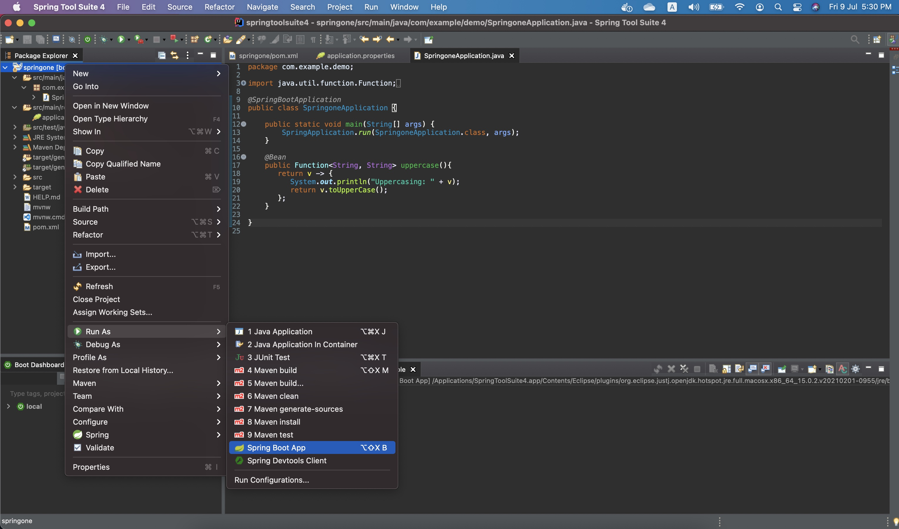
A. PubSub+ Broker running locally in Docker
✅ In order to test your function open Solace PubSub+ Manager and navigate to the Try Me! tab
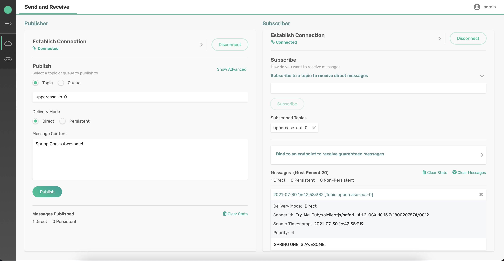
This page will allow you to send and receive messages to see if your function is working as expected.
To test your function perform the following steps:
- Click the
Connectbutton for the "Subscriber" - Type "uppercase-out-0" into the "Subscribe to a topic to receive direct messages" box and click
Subscribe - Click the
Connectbutton for the "Publisher" - Type "uppercase-in-0" as the topic to publish to.
- Type "Spring One is Awesome!" in the "Message Content" box and click
Publish
🚀 You should see your application printed "Uppercasing: Spring One is Awesome!" in your IDE and the "Subscriber" in the "Try Me!" menu in Solace Cloud should show that a message was received that contained "SPRING ONE IS AWESOME!"
B. PubSub+ Broker running on Solace Cloud
✅ In order to test your function open Solace Cloud, select the messaging service and navigate to the Try Me! tab
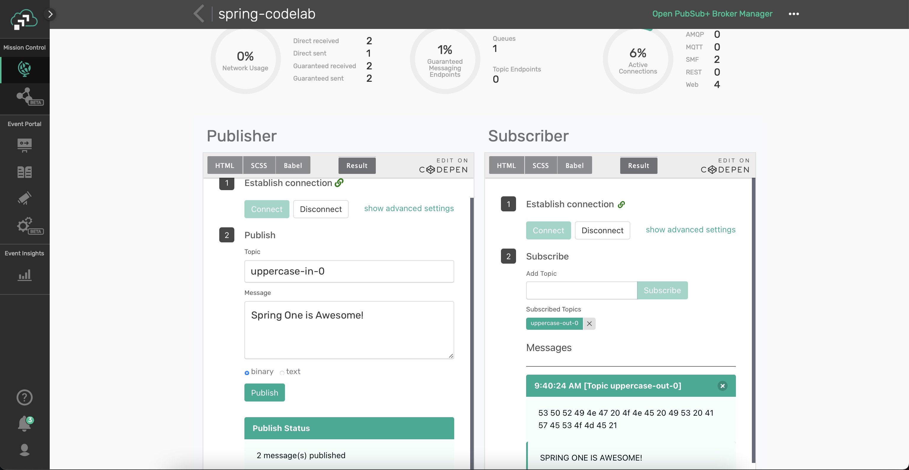
This page will allow you to send and receive messages to see if your function is working as expected.
To test your function perform the following steps:
- Click the
Connectbutton for the "Subscriber" - Type "uppercase-out-0" into the "Subscribe to a topic to receive direct messages" box and click
Subscribe - Click the
Connectbutton for the "Publisher" - Type "uppercase-in-0" as the topic to publish to.
- Type "Spring One is Awesome!" in the "Message Content" box and click
Publish
🚀 You should see your application printed "Uppercasing: Spring One is Awesome!" in your IDE and the "Subscriber" in the "Try Me!" menu in Solace Cloud should show that a message was received that contained "SPRING ONE IS AWESOME!"
🎉 Congratulations! You just created your first Spring Cloud Stream microservice!
Another powerful feature of Spring Cloud Stream is inherited from Spring Cloud Function, and that feature is the capability of doing Function Composition. This allows you to create simple functions as Spring Beans that can be individually tested, re-used and chained together to create a processing chain.
We'll extend the processor microservice we created in Step 4 to both uppercase and reverse the String found in the payload of the message. Following functional programming best practices we want to keep our functions simple and re-usable so instead of just adding the new business logic of reversing the String to the existing Function we'll create a new function and use functional composition to effectively create a processing pipeline in our microservice. The end result will look like the diagram below, note that there are now two separate functions in our microservice.
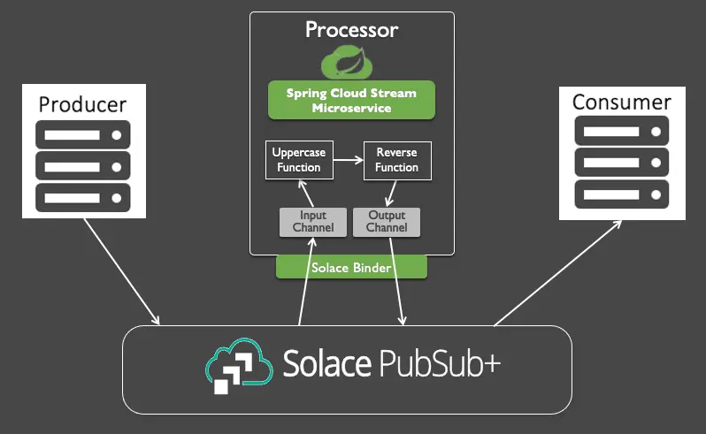
Instead of just talking about Function Composition let's try it out 😁.
In the same class where you already have your "uppercase" function let's create a "reverse" function that takes in a string and reverses the ordering. This function would like something like this:
@Bean
public Function<String, String> reverse(){
return v -> {
System.out.println("Reversing: " + v);
return new StringBuilder(v).reverse().toString();
};
}
Now that we have two functions Spring Cloud Stream won't just assume what bindings we want created so we need to go configure them in the application config file. Assuming we want to uppercase an incoming String and then reverse it we will add these properties to the file:
Option 1: application.properties
spring.cloud.stream.binders.solace.type=solace
spring.cloud.stream.binders.solace.environment.solace.java.host=tcps://xxxxxxx.messaging.solace.cloud:55443
spring.cloud.stream.binders.solace.environment.solace.java.msgVpn==**********
spring.cloud.stream.binders.solace.environment.solace.java.clientUsername=solace-cloud-client
spring.cloud.stream.binders.solace.environment.solace.java.clientPassword=**********
spring.cloud.stream.binders.solace.environment.solace.java.connectRetries=0
spring.cloud.stream.binders.solace.environment.solace.java.connectRetriesPerHost=0
spring.cloud.function.definition=uppercase|reverse
spring.cloud.stream.function.bindings.uppercasereverse-in-0=input
spring.cloud.stream.function.bindings.uppercasereverse-out-0=output
Option 2: application.yml
spring:
cloud:
function:
definition: uppercase|reverse
stream:
function:
bindings:
uppercasereverse-in-0: input
uppercasereverse-out-0: output
binders:
solace:
type: solace
environment:
solace:
java:
clientPassword: *************
clientUsername: solace-cloud-client
connectRetries: 0
connectRetriesPerHost: 0
host: tcps://**********.messaging.solace.cloud:55443
msgVpn: spring-codelab
✅ We now have our function all wired up so go ahead and stop the app and restart it.
🥳 Woohoo we have now created a Spring Cloud Stream app that uses a pipeline of functions to process incoming messages!
A. PubSub+ Broker running locally in Docker
✅ In order to test your function open Solace PubSub+ Manager and navigate to the Try Me! tab
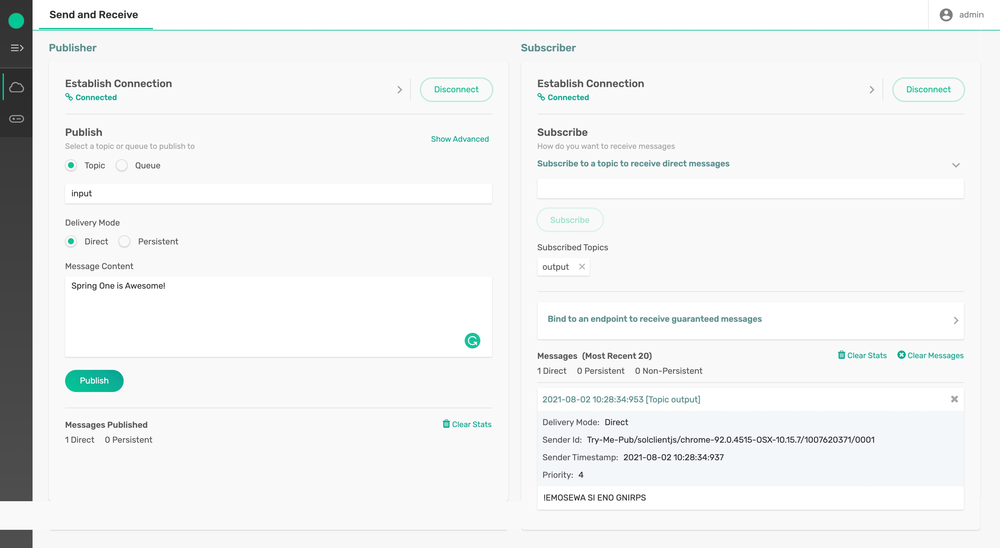
This page will allow you to send and receive messages to see if your function is working as expected.
To test your function perform the following steps:
- Click the
Connectbutton for the "Subscriber" - Type "output" into the "Subscribe to a topic to receive direct messages" box and click
Subscribe - Click the
Connectbutton for the "Publisher" - Type "input" as the topic to publish to.
- Type "Spring One is Awesome!" in the "Message Content" box and click
Publish
🚀 You should see your application printed
Uppercasing: Spring One is Awesome!
Reversing: SPRING ONE IS AWESOME!
in your IDE and the "Subscriber" in the "Try Me!" menu in Solace Cloud should show that a message was received that contained "!EMOSEWA SI ENO GNIRPS"
B. PubSub+ Broker running on Solace Cloud
✅ In order to test your function composition open Solace Cloud, select the messaging service and navigate to the Try Me! tab
This page will allow you to send and receive messages to see if your function is working as expected.
To test your function perform the following steps:
- Click the
Connectbutton for the "Subscriber" - Type "output" into the "Subscribe to a topic to receive direct messages" box and click
Subscribe - Click the
Connectbutton for the "Publisher" - Type "input" as the topic to publish to.
- Type "Spring One is Awesome!" in the "Message Content" box and click
Publish
🚀 You should see your application printed
Uppercasing: Spring One is Awesome!
Reversing: SPRING ONE IS AWESOME!
in your IDE and the "Subscriber" in the "Try Me!" menu in Solace Cloud should show that a message was received that contained "!EMOSEWA SI ENO GNIRPS"
✅ Hopefully this codelab showed you how easy it can be to create event-driven microservices using Spring Cloud Stream. Note that you didn't have to learn any messaging APIs as the Cloud Stream Binder abstracts them from you!
✅ Move on to the Spring Cloud Stream Beyond the Basics codelab.
✅ Learn how to generate Cloud Stream apps using AsyncAPI here.
✅ Learn how to publish to dynamic topics using Spring Cloud Stream by a sample here.

Thanks for participating in this codelab! Let us know what you thought in the Solace Community Forum! If you found any issues along the way we'd appreciate it if you'd raise them by clicking the Report a mistake button at the bottom left of this codelab.